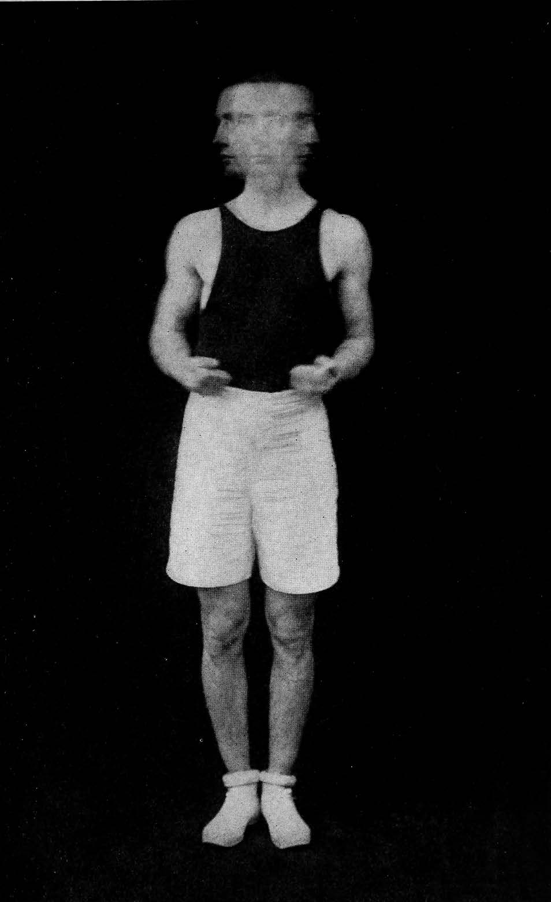

La Cravate

La Cravate retrace la trajectoire d’un jeune militant du Front National dans la Somme, lors de la dernière campagne présidentielle.
Le film s’attache à son parcours individuel dans un contexte social, géographique, scolaire et familial éclairant les raisons de son engagement politique. Le film pourrait n’être qu’un récit sociologique. Mais s’il peut généraliser le cas d’un « petit soldat de l’extrême droite » à « une foule de petits soldats », c’est parce qu’il parvient par les moyens du cinéma à ne jamais le réduire à un rôle uniquement représentatif. L’articulation de la démarche sociologique au cinéma trouve ici une forme juste, celle qui rend possible un endroit de rencontre.
L’écriture du film est faite de couches successives. Les deux réalisateurs ont d’abord filmé Bastien Régnier dans son quotidien pendant la campagne électorale et réalisé des entretiens avec lui. Ils ont tiré de cette première étape de tournage un texte écrit à la manière d’un récit balzacien. Le film s’ouvre sur un entretien mettant en scène la découverte par Bastien de cette transposition romanesque des évènements. Apparaissent alors comme des réminiscences les séquences tournées lors de la campagne, accompagnées par le récit en voix off. Par des allers-retours entre ces deux moments de tournage, le film intègre les réactions de Bastien, parfois surprises ou amusées, parfois légèrement gênées, dénichant dans les détails de l’écriture le regard du narrateur sur lui.
À chaque étape, le film documente en même temps son processus. Le droit de rectification laissé à Bastien est pris au sein de ce dispositif très précis et verrouillé, les cinéastes gardant la main sur leur mise en scène. Ce qui pourrait être une limite apparaît plutôt comme une nécessité politique. Si un espace est laissé à Bastien pour s’exprimer, les idées qu’il porte ne sont pas débattues. Ne pas ouvrir cette discussion est aussi une manière de refuser toute place à un discours qui n’a pas lieu d’être, et qui demande plutôt à être combattu. La voix off quadrille les images de la campagne. S’il faut bien approcher ce monde de l’extrême droite pour tenter de comprendre ce qui se joue là, son expression au sein du film est contenue, sa capacité de nuisance déconstruite. Face à une menace qui existe dans le réel, les biais fictionnels sont politiques : ils en neutralisent l’efficacité. C’est à cette condition que Bastien peut ne pas être filmé comme un ennemi.
Dans sa lecture, Bastien est invité à observer son double, un personnage décrit à la troisième personne et raconté au passé, une version de lui-même passée au filtre du regard des réalisateurs. De cette construction émerge un lieu d’énonciation hybride, un narrateur capable d’affirmer à la fois l’antagonisme idéologique et l’espace commun du film : être ensemble sans être du même côté. Point d’équilibre, la voix off est le lieu d’une approbation ; elle tient ensemble deux positions qui s’affrontent, permettant ainsi de mesurer la distance qui les sépare.
Le regard que chacun porte sur l’autre n’en demeure pas indemne. Le narrateur s’incarne à l’image dans la bouche des réalisateurs. Ils ne désignent plus seulement un « il » mais disent aussi « nous », témoin d’une relation qui s’est tissée. Des regards échangés, l’on perçoit que Bastien s’est entrevu à travers d’autres yeux que les siens, faisant peut-être vaciller quelques certitudes. Émerge alors la question morale du jugement à porter sur lui, que le film laisse irrésolue, comme une manière de déverrouiller un dispositif pour laisser une place au spectateur*, à qui il revient de choisir la réponse à donner.
— Alix Tulipe
| Date | Salle | Heure | Programmation |
|---|---|---|---|
| 18 août 2019 | Plein air | 20h30 | |
| 22 août 2019 | Salle Moulinage | 10h15 | Expérience du regard |